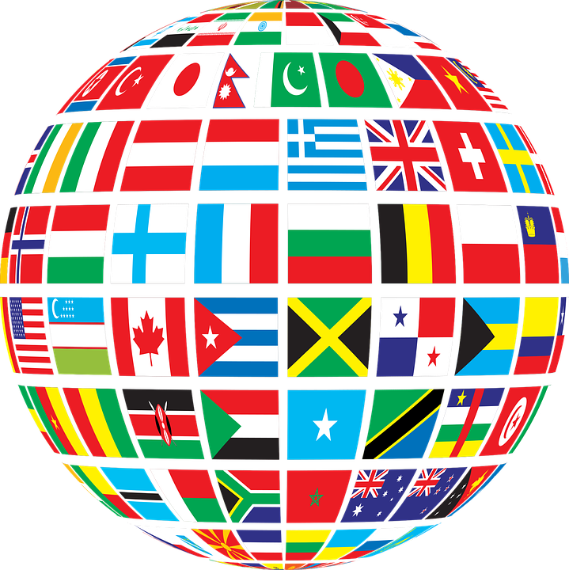
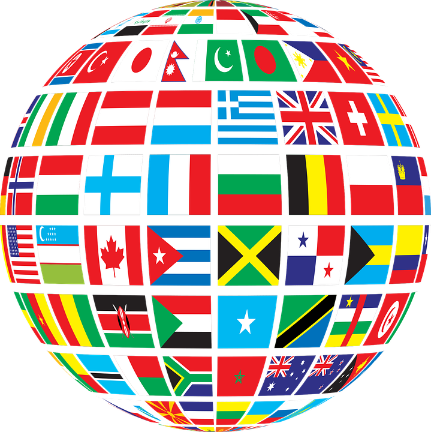
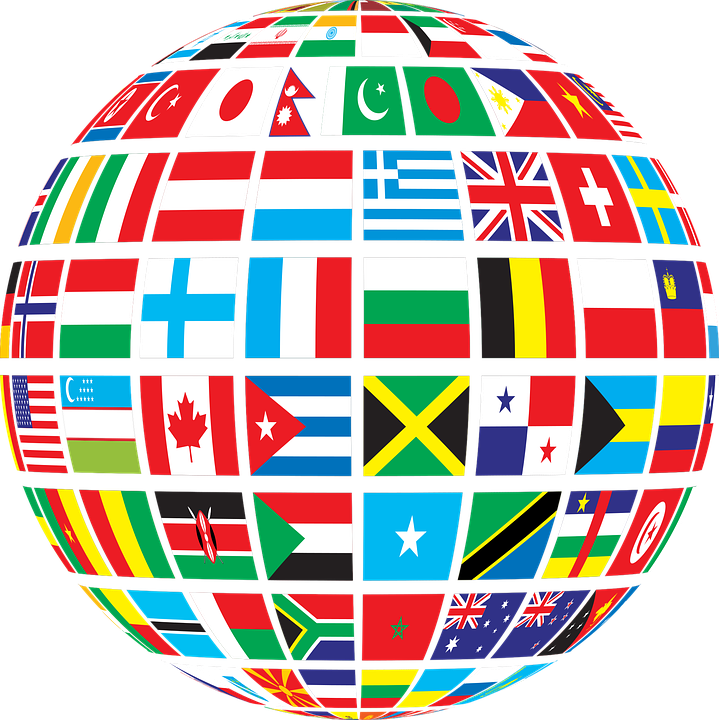
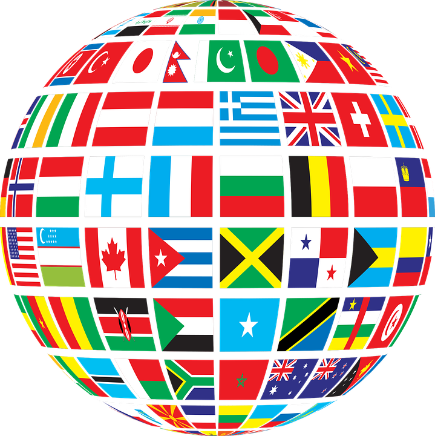

Capital: Moscow
Most Spoken Language: Russian
Population: 143.5 million
Dominant Religion: Christian Orthodox
Currency: Russian Ruble
Russia is essentially the worlds largest nation, it has an area of about 17.1 million km squared. It
borders
Kazakhstan, Mongolia, China and many other European countries as well as the the artic oceans to the north
which means it also has frequent cold weather. In terms of resources, Russia has a wide variety of natural
resources such as coal, timber, gold, gas and is one of the largest producers of oil. Russia has a rich culture
which
gave the world art forms like ballet with some of the greatest roots in classical music and literature.